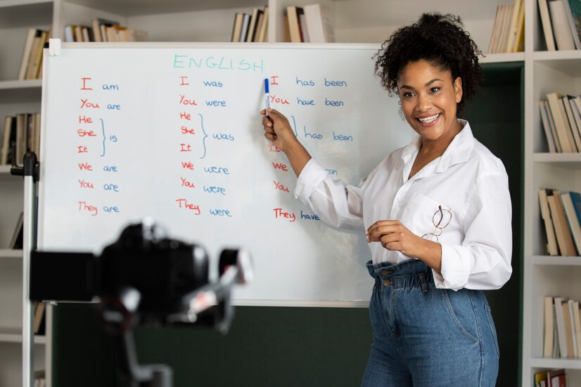
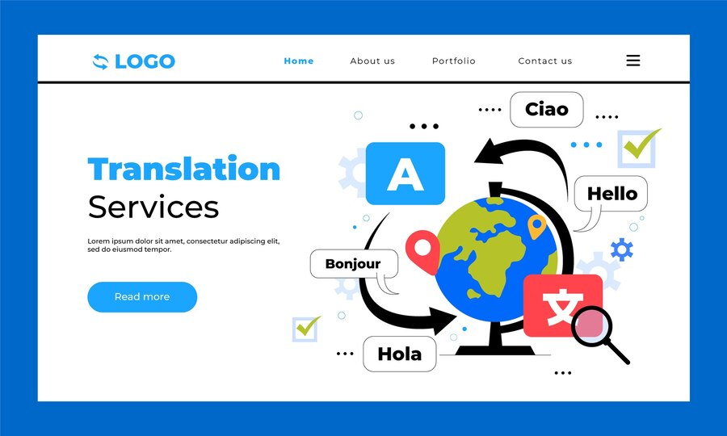
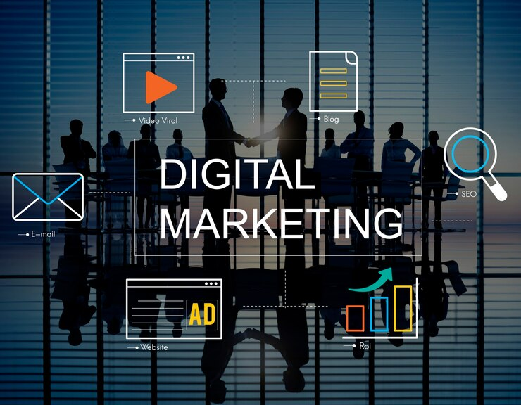

Services
Services Linguistiques

Formation
Nous offrons des formations sur mesure pour améliorer vos compétences linguistiques et professionnelles.
Nous offrons des formations sur mesure pour améliorer vos compétences linguistiques et professionnelles.

Traduction
Nos services de traduction garantissent des traductions précises et adaptées à vos besoins.
Nos services de traduction garantissent des traductions précises et adaptées à vos besoins.

Interprétation
Nous proposons des services d'interprétation pour des événements et des réunions, en garantissant une communication fluide.
Nous proposons des services d'interprétation pour des événements et des réunions, en garantissant une communication fluide.
Solutions Digitales

Marketing Digital
Notre équipe vous aide à élaborer des stratégies de marketing digital efficaces pour atteindre vos objectifs.
Notre équipe vous aide à élaborer des stratégies de marketing digital efficaces pour atteindre vos objectifs.
Business Intelligence
Nous offrons des solutions de business intelligence pour vous aider à prendre des décisions éclairées basées sur les données.
Nous offrons des solutions de business intelligence pour vous aider à prendre des décisions éclairées basées sur les données.